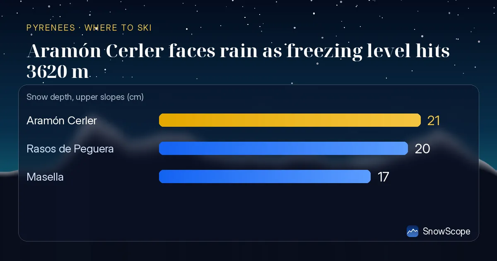

Aramón Cerler faces rain as freezing level hits 3620 m
Sunday's freezing level will climb to 3620 m, above the 2618 m top of Aramón Cerler's lifts, bringing rain to the highest slopes. The upper elevations now hold about 21 cm of snow, but rain falling on this thin pack will add weight and runoff to the region's rivers.
See the live snow forecast for Aramón Cerler in the SnowScope appSnow depth, powder alerts and the 3D map, free.
The water story
On Sunday, the freezing level reaches 3620 m at maximum. This matters because when precipitation falls as rain instead of snow, it moves through the snowpack quickly and runs off into streams rather than storing water in solid form. At Aramón Cerler, the peak sits at 2618 m. For now, early Saturday will see the freezing level around 2430 m, still below the top; but by Sunday, warming and moisture will lift it well above, shifting upper-slope precipitation from solid to liquid.
That shift changes what the mountain stores and releases into the hydrological system. Rain doesn't soak into early-season snow; it channels downward and exits as rapid runoff into the network of small streams feeding down the mountainside.
| Resort | Snow depth | New snow, 72 h | Coming, next days | Top |
|---|---|---|---|---|
| Aramón Cerler | 21 cm | 2 cm | 1 cm | 2,618 m |
| Rasos de Peguera | 20 cm | 3 cm | 0 cm | 2,036 m |
| Masella | 17 cm | 2 cm | 0 cm | 2,509 m |

Snow now: thin and already melting
The upper slopes at Aramón Cerler hold 21 cm as of Friday 6 November. A nearby station at Das measured 3 cm on 2 November at 1096 m. This is thin early-season cover. Over the past 72 hours, 2 cm fell at the top; none in the last 24 hours. The trend is downward: by Monday 9 November, the snow-covered area of the entire Pyrenees region is forecast to drop from today's 660 km² to 360 km².
The snowpack is fragile and cannot absorb rain water. Downstream reservoirs and rivers in the region will feel the pulse of runoff on Sunday.
What won't stay frozen
On Saturday, the freezing level ranges between 2430 m and 2950 m. That means the base and mid elevations at Aramón Cerler (1503 m to 2060 m) will see temperatures above freezing all day, even if the sky clears. Any remaining surface snow will soften and melt.
Sunday brings the critical shift: the freezing level peaks at 3620 m. Only the very top slopes near 2618 m—and only north-facing slopes—have a chance to remain frozen. South-facing and east-facing slopes will soften quickly as rain falls instead of snow.
Rain-on-snow mechanics and avalanche risk
Rain on thin early-season snow is a hydrological event with consequences for slope stability. The snowpack isn't dense enough to absorb the extra water, and the contact between rain water and old snow can trigger sloughing or avalanche activity. Before going off-piste, read the official avalanche bulletin for the region.
From a water-storage perspective, Pyrenean reservoirs and rivers will see a sudden shift from slow melting to rapid runoff on Sunday. This matters for flood risk and water management downstream.
Where to find what's left
The two other resorts—Rasos de Peguera (20 cm upper slopes) and Masella (17 cm upper slopes)—face the same freezing-level squeeze. All three top out between 2036 m (Rasos de Peguera) and 2618 m (Aramón Cerler), so all will experience rain at the summit by Sunday afternoon.
The region is shedding snow rapidly: 26 resorts still have snow today, forecast to drop to 24 by Monday. Early-season snow is thin: stay on groomed pistes and avoid terrain where rocks may lie under the snow.
Weekend forecast for skiers
Check the resort website for lift status and opening before you drive. This is a marginal weekend. Saturday may offer a few descents on high north-facing slopes if the resort opens and the snow survives the warm start. Sunday will be slushy or bare from midday onward.
Plan for Saturday morning only, and choose high north-facing slopes where the freezing level stays lowest longest. After midday Saturday the warming begins, and by Sunday afternoon most elevations will be above the rain line. This is a scouting weekend, not a powder mission.
Tips for skiers
- Go early Saturday if conditions allow; the freezing level stays below the peak before mid-morning. High north-facing slopes hold frozen snow longest.
- Sunday from midday brings rain to all peaks above 2618 m. Expect soft snow Saturday afternoon and slushy or bare conditions Sunday. Plan to leave by Saturday evening or skip the weekend.
- Early-season snow is thin and fragile; rocks lie under the cover. Stay on groomed pistes. If you go off-piste, read the official avalanche bulletin first—rain-on-snow increases instability risk.
- Check the resort website for lift status. The warm forecast and thin snow mean many lifts may not open this weekend. Confirm before driving.
- The upper slopes hold 21 cm at best across the region's three main resorts. Plan for Saturday morning only, on high north-facing slopes where freezing lasts longest.
About these numbers
Resort snow depths are the deepest snow on the resort's upper slopes from the SnowScope snow model (about 1 km, run of 5 November); they are estimates for an area, not a measurement at one point. Station values are measurements on the date shown. Forecasts can change. Always read the official avalanche bulletin before going off-piste.
Official avalanche bulletins: Météo-France / Meteocat / AEMET
Cite this report
For research, teaching or the press: the numbers and charts are free to reuse under CC BY 4.0 with this citation.
SnowScope (2026), Aramón Cerler faces rain as freezing level hits 3620 m, https://snowscope.app/blog/en/2026/11/pyrenees-where-to-ski-this-weekend-6-november-2026.html, accessed 2026-11-06
SnowScope (Atlas Labs). (2026, November 6). Aramón Cerler faces rain as freezing level hits 3620 m. SnowScope snow reports. https://snowscope.app/blog/en/2026/11/pyrenees-where-to-ski-this-weekend-6-november-2026.html
BibTeX
@misc{snowscope2026pyreneeswheretoskithiswe,
author = {{SnowScope (Atlas Labs)}},
title = {Aramón Cerler faces rain as freezing level hits 3620 m},
year = {2026},
month = nov,
howpublished = {\url{https://snowscope.app/blog/en/2026/11/pyrenees-where-to-ski-this-weekend-6-november-2026.html}},
note = {Published 2026-11-06 10:53 UTC; accessed 2026-11-06}
}· CC BY 4.0 · Methods, data and tools →
Aramón Cerler: snow and temperature by height, this winter vs last (tools) →
Follow Aramón Cerler
Free: a message when fresh snow is coming, and the forecast every morning.
More snow reports

How long the Pyrenees stayed white each winter since 2000-01, seen by satellite, and snow depth at 10 long-running stations. Three thin winters in a row ended in 2025-26; this autumn has started normally.

Freezing level reaches 3400m–3600m over the next three days, bringing rain to the snowpack from 09–11 November. Forecast from 08 November.

Gourette and Cauterets side by side: heights, usual snow by month, the best weeks and how to get there, from 46 past winters.